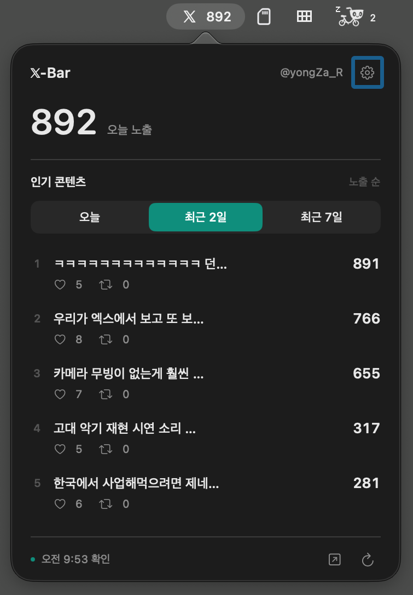

궁금할 땐, 위를 보세요.
오늘 내 글이 얼마나 보여졌는지. 메뉴바에서 가볍게 확인하세요.
무료 오픈소스 · 한국어 / English / 日本語
반응이 궁금해 X를 열었다가 시간이 훌쩍 지났나요? X-Bar로 잠깐 확인하고, 하던 일로 돌아오세요.
Mac용 무료 다운로드X 분석을 이용할 수 있는 계정이 필요합니다.

오늘 내 글이 얼마나 보여졌는지. 메뉴바에서 가볍게 확인하세요.
인기 게시물과 좋아요·재게시를 함께 보고, 글을 눌러 분석으로 이어가세요.
재게시가 빠르게 늘 때 메뉴바에 작은 무지개가 나타납니다.
위의 다운로드 버튼을 눌러 받은 DMG 파일을 여세요.
X-Bar 아이콘을 응용 프로그램 폴더로 드래그하고 실행하세요.
Safari 연결 또는 앱 내 로그인을 선택하세요. 계정명과 오늘 노출 수가 확인되면 준비 끝입니다.
Safari 설정에서 X-Bar 확장을 켜고 x.com 접근을 허용한 뒤 연결하면 됩니다. 연결을 마치면 Safari를 종료해도 X-Bar가 실행 중인 동안 갱신을 시도합니다.
X-Bar는 무료입니다. 별도의 X-Bar 회원가입도 없습니다. X 분석 화면에 접근할 수 있는 계정이 필요하며, X 서비스의 이용 조건은 별도로 적용됩니다.
오늘 총노출은 기본 10분 간격이며 설정에서 5·10·30분을 선택할 수 있습니다. 게시물 목록은 약 10분 간격입니다. 잠자기·인터넷 연결·X 응답에 따라 지연될 수 있습니다.
글을 게시한 날짜 기준입니다. 글별 노출·좋아요·재게시는 누적 수치입니다. 계정의 오늘 총노출에는 예전 글도 포함됩니다. 인기 순위는 앱이 확인한 게시물을 기준으로 표시합니다.
0.5.2부터 설정에서 업데이트를 확인할 수 있습니다. 설치를 선택하면 다운로드 후 설치·재실행까지 이어집니다. 하루 한 번 자동으로 확인하며 설정에서 끌 수 있습니다.
이 Mac의 앱 전용 저장소에 보관합니다. 계정·게시물·통계를 개발자 서버에 보내지 않습니다. Safari 연결은 사용자의 확인을 거쳐 진행되며 X 웹사이트와의 통신에는 X의 개인정보처리방침이 적용됩니다.
X-Bar가 마음에 들었다면 @yongZa_R를 팔로우해 주세요. 다음 업데이트와 새로운 앱 소식을 전합니다.